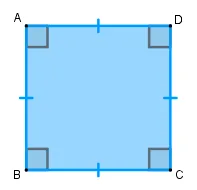
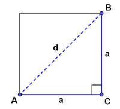
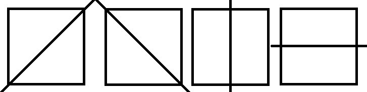

Um quadrado é uma figura geométrica que possui características distintivas e
propriedades específicas, incluindo:
Definição e Elementos Principais:
- Um quadrado é uma forma plana com quatro lados iguais e quatro ângulos
retos (90 graus).
- Os lados opostos de um quadrado são paralelos e têm a mesma medida de comprimento.
- Os quatro ângulos do quadrado medem todos 90 graus, tornando-o um quadrilátero regular.

Propriedades Básicas:
- A medida de cada ângulo interno do quadrado é de 90 graus.
- Os quatro lados têm o mesmo comprimento, o que é chamado de medida do lado do quadrado.
- A soma dos ângulos internos de um quadrado é sempre 360 graus.
- O quadrado é um caso especial do retângulo, onde todos os ângulos são retos e os lados
são de igual comprimento.
Área e Perímetro:
- A área de um quadrado é calculada multiplicando o comprimento de um lado por ele mesmo
(A = L²), onde A é a área e L é a medida do lado.
- O perímetro de um quadrado é a soma dos comprimentos dos quatro lados, o que é dado por
P = 4L, onde P é o perímetro e L é a medida do lado.
Diagonais:
- Um quadrado possui duas diagonais que conectam os cantos opostos.
- As diagonais de um quadrado têm a mesma medida de comprimento e
dividem o quadrado em quatro triângulos retângulos congruentes.

Simetria:
- Um quadrado é uma figura simétrica, o que significa que pode ser
dividido em metades iguais que se encaixam perfeitamente uma na outra.
- Possui quatro eixos de simetria, um ao longo de cada lado e duas diagonais.

Usos Práticos:
- Quadrados são amplamente utilizados na arquitetura, engenharia e design
devido à sua regularidade e facilidade de construção.
- Azulejos, pisos, janelas e muitos outros elementos da construção podem
ser baseados na forma quadrada.
Relações com Outras Figuras Geométricas:
- Um quadrado pode ser considerado um tipo especial de retângulo, onde
todos os ângulos são retos, ou um tipo especial de losango, onde todos os lados
são iguais.